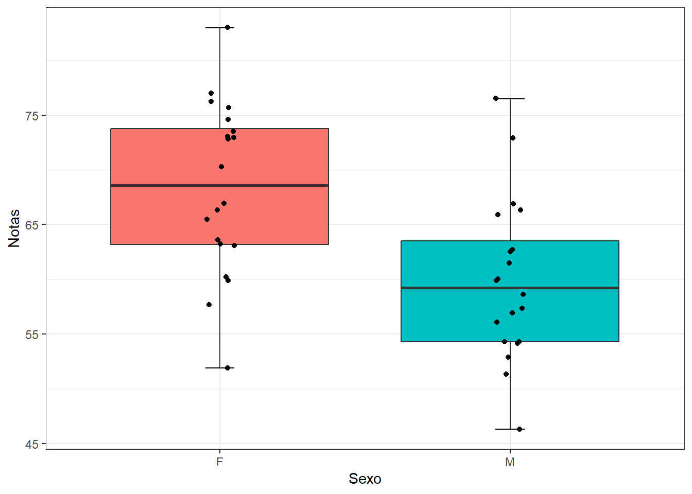
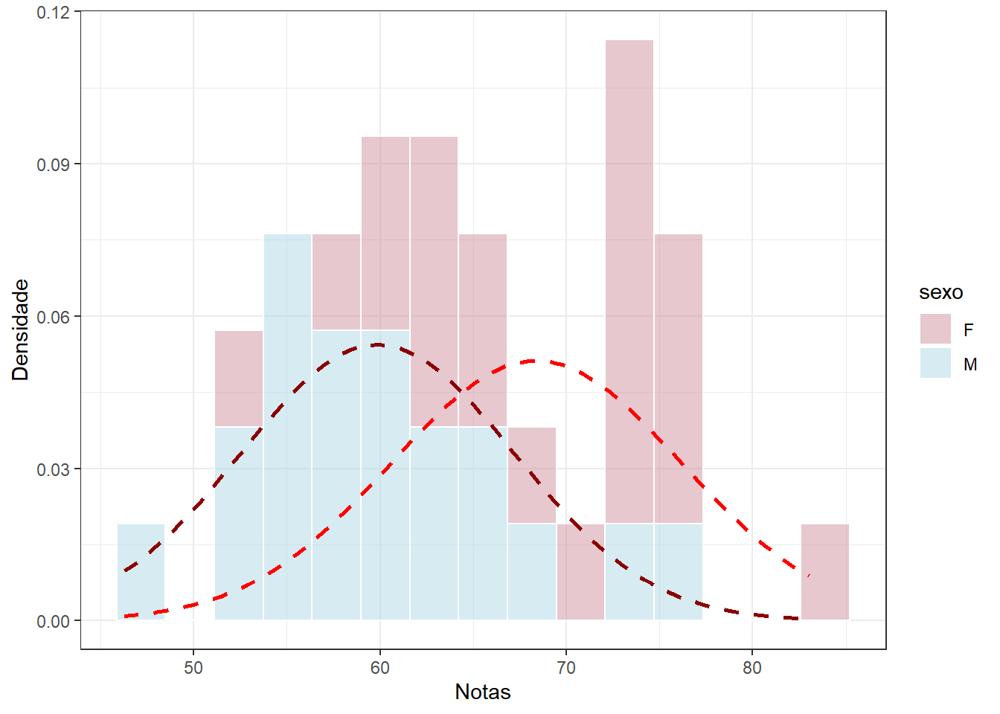
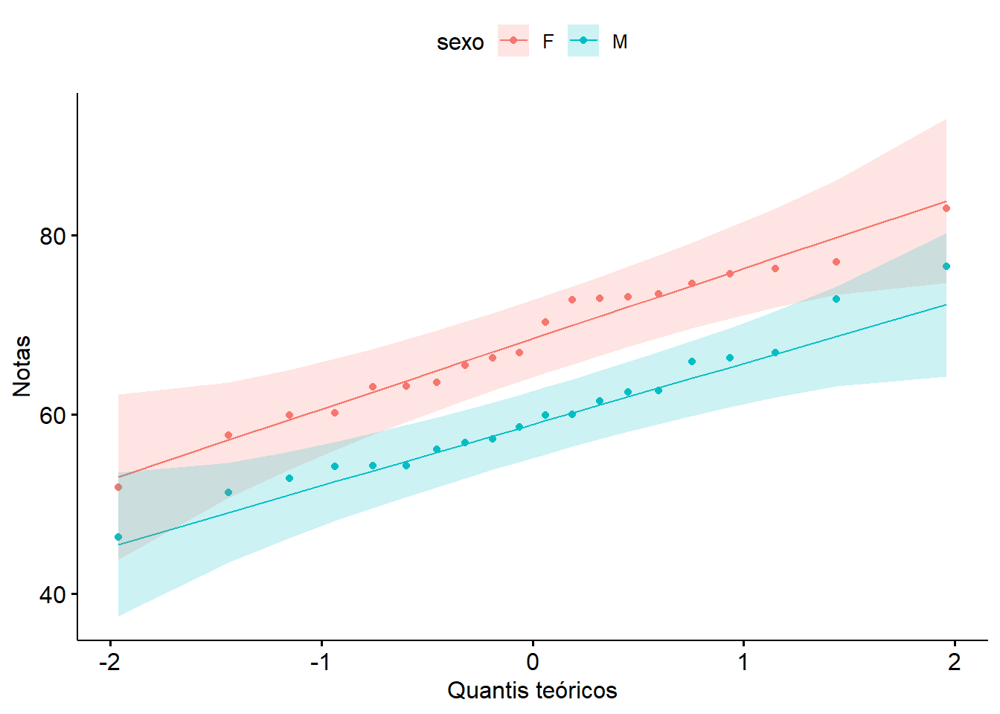
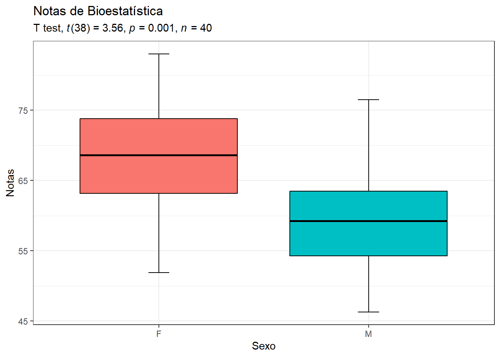
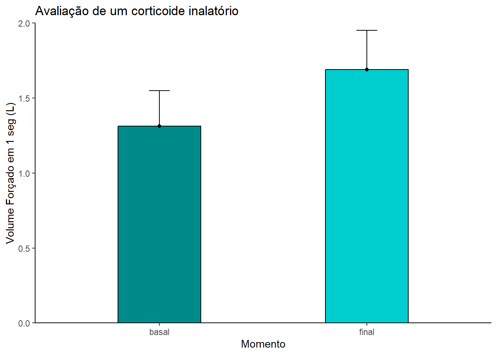
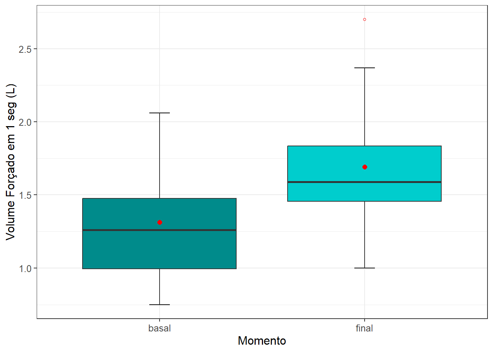
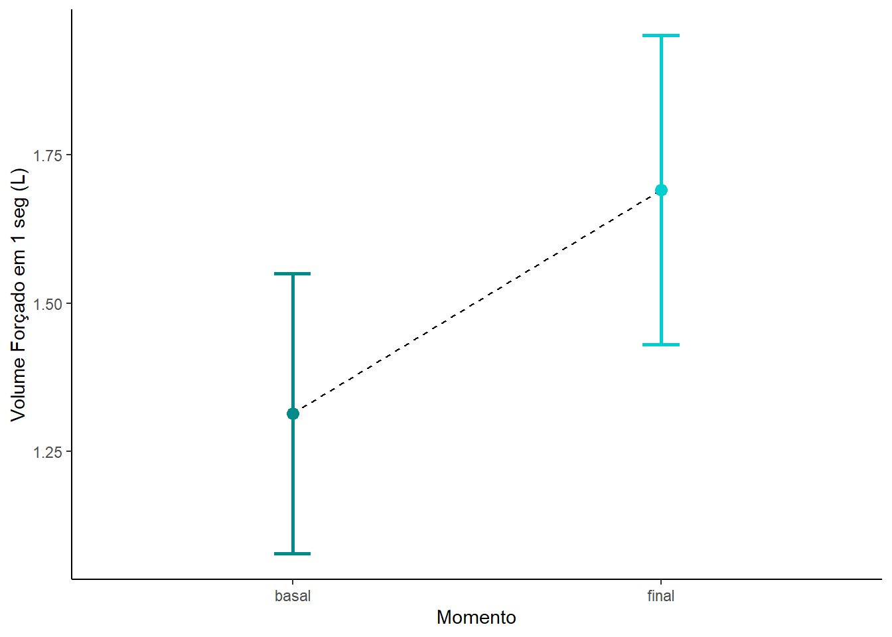
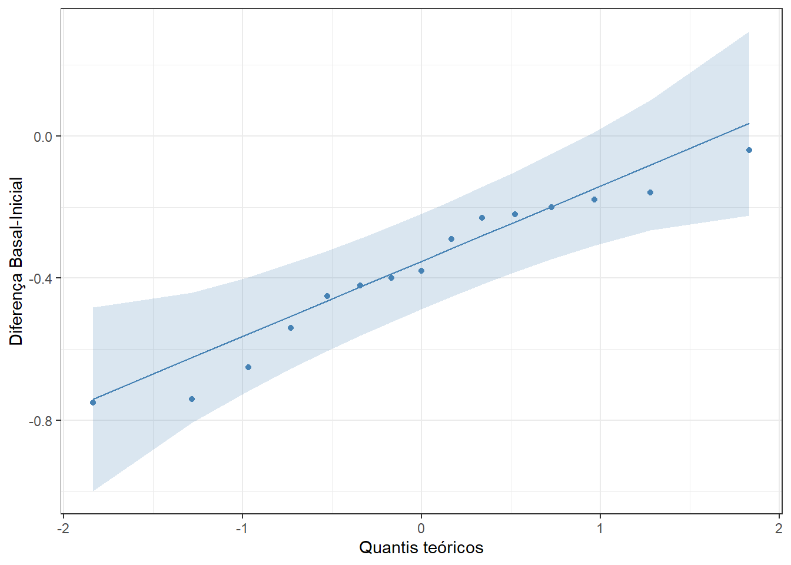
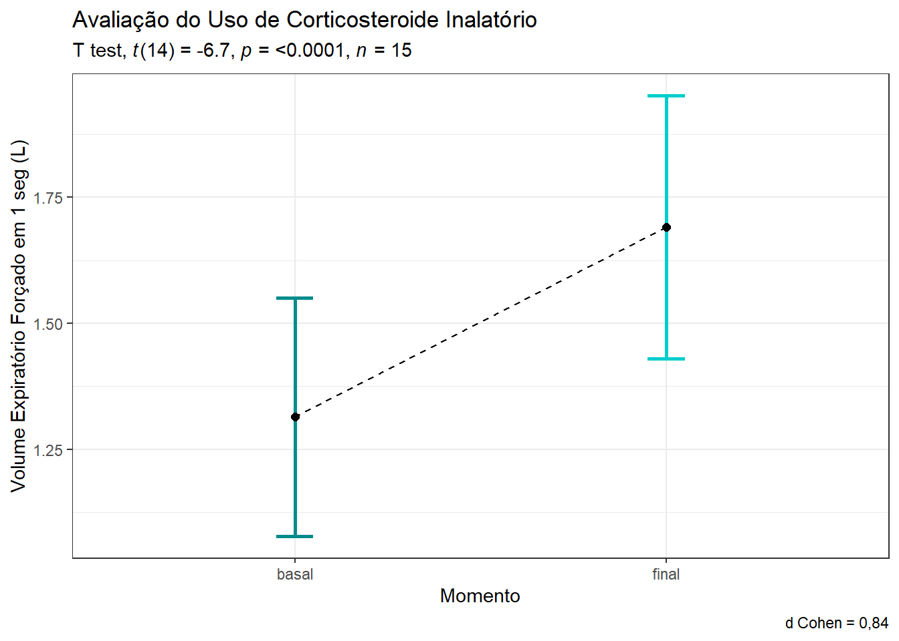

pacman::p_load(car,
effectsize,
ggpubr,
ggsci,
kableExtra,
knitr,
readxl,
rstatix,
tidyverse)12 Comparação entre duas médias
12.1 Pacotes necessários para este capítulo
12.2 Teste t para amostras independentes
O teste t de amostras independentes é usado para comparar duas médias de amostras de grupos não relacionados. Isso significa que há pessoas diferentes fornecendo escores para cada grupo. O objetivo desse teste é determinar se as amostras são diferentes uma da outra
12.2.1 Dados usados nesta seção
Suponha que. em uma determinada Universidade, tenham sido coletadas as notas de Bioestatística de uma turma de 40 alunos. Estes dados estão aqui. Salve o mesmo no seu diretório de trabalho para a leitura dos dados.
12.2.1.1 Leitura dos dados
Para a leitura dos dados, será usada a função read_excel() incluída no pacote readxl, que precisa ser instalado e carregado. Os dados serão recebidos por um objeto que será denominado de dados:
dados <- readxl::read_excel("dados/dadosNotas.xlsx")Para visualizar os dados, pode-se usar a função str():
str(dados)tibble [40 × 2] (S3: tbl_df/tbl/data.frame)
$ notas: num [1:40] 63.1 76.3 57.7 66.9 73.1 70.3 63.6 75.7 73.5 83 ...
$ sexo : chr [1:40] "F" "F" "F" "F" ...Observa-se que existem 40 alunos, sendo 20 mulheres e 20 homens. A variável altura é uma variável numérica que corresponde a a nota centesimal e sexo é uma variável categórica, onde F são as mulheres e M os homens.
12.2.1.2 Exploração e resumo dos dados
Inicialmente, a variável sexo será transformada em fator:
dados$sexo <- as.factor(dados$sexo)A seguir, calcular a média e o desvio padrão da variável notas de acordo com sexo, usando a função group_by () e summarise do pacote dplyr
resumo <- dados %>%
dplyr::group_by(sexo) %>%
dplyr:: summarise(n = n(),
media = mean(notas, na.rm = TRUE),
dp = sd(notas, na.rm = TRUE),
mediana = median(notas, na.rm = TRUE),
Q1 = quantile(notas,0.25, na.rm = TRUE),
Q3 = quantile(notas, 0.75, na.rm = TRUE),
me = 1.96 * dp/sqrt(n))
resumo# A tibble: 2 × 8
sexo n media dp mediana Q1 Q3 me
<fct> <int> <dbl> <dbl> <dbl> <dbl> <dbl> <dbl>
1 F 20 68.4 7.79 68.6 63.2 73.8 3.41
2 M 20 59.9 7.34 59.2 54.3 63.5 3.22A saída informa que a média das notas das mulheres é 68.4, bem acima da notas dos homens, mostrando uma diferença de 8.5. Parece que o desempenho das mulheres em Bioestatística é melhor do que o dos homens!
Além do resumo numérico, é interessante construir um gráfico do tipo boxplot (Figura 12.1), usando o pacote ggplot2 (veja Seção 6.6) para observar a distribuição dos dados:
ggplot2::ggplot(data = dados, aes(x = sexo,
y = notas,
fill = sexo)) +
geom_errorbar(stat = "boxplot", width = 0.1) +
geom_boxplot() +
geom_jitter(width = 0.05) +
labs (x = "Sexo",
y = "Notas") +
theme_bw() +
theme(legend.position="none")

Os boxplot sugerem que as notas dos alunos diferem, de acordo o sexo.
12.2.2 Definição das hipóteses estatísticas
As hipóteses comparam as médias dos dois grupos. Para um teste bicaudal, as hipóteses são escritas como:
\[ H_{0}: \mu_{F} = \mu_{M} \]
\[ H_{1}: \mu_{F} \neq \mu_{M} \]
12.2.3 Definição da regra de decisão
O nível significância, \(\alpha\), escolhido é igual a 0.05. A distribuição t é dependente dos graus de liberdade, dados por:
No exemplo,
n1 <- resumo$n[1]
n2 <- resumo$n[2]
gl <- n1 + n2 - 2
gl[1] 38Para um \(\alpha = 0,05\), o valor crítico de t para gl =38 para uma hipótese alternativa bicaudal é obtido com a função qt (p, df), onde \(df = gl\) e \(p = 1 - \alpha/2\)
alpha <- 0.05
p <- 1 - alpha/2
tc <- round (qt((1-alpha/2), gl), 3)
tc[1] 2.024Portanto, se
\[ |t_{calculado}| < |t_{crítico}| \to não \quad se \quad rejeita \quad H_{0} \]
\[ t_{calculado}| \ge t_{crítico}| \to rejeita-se \quad H_{0} \]
12.2.4 Teste estatístico
Para determinar se existe uma diferença estatisticamente significativa entre as médias das notas de dois grupos independentes, será usado o teste t para duas amostras independentes, também conhecido como teste t de Student, baseado na distribuição de mesmo nome.
12.2.4.1 Lógica do teste t
O teste t compara as médias de duas amostras independentes, usando o erro padrão como métrica da diferença entre essas médias. Quanto maior o valor de t , maior a probabilidade de que as amostras pertençam a grupos diferentes, ocorrendo nessas circunstâncias a rejeição da hipótese nula (1).
Calcula-se o teste t com a seguinte equação:
\[ t = \frac{(\bar{x}_1 - \bar{x}_2) - (\mu_1 - \mu_2)}{EP_{d}} \]
Onde \(EP_d\) é o erro padrão da diferença entre a médias \(\bar{x}_1 - \bar{x}_2\). Se a hipótese nula for verdadeira, as amostras foram retiradas da mesma população e, portanto, \(\mu_1 - \mu_2 = 0\). Assim, a equação fica:
\[ t = \frac{(\bar{x}_1 - \bar{x}_2)}{EP_d} \]
O erro padrão da diferença \(\bar{x}_1 - \bar{x}_2\) é calculado de maneiras diferentes:
- Se a variâncias nos dois grupos forem iguais, usa-se:
\[ EP_d = \sqrt{s_o^2(\frac{1}{n_1}+\frac{1}{n_2})} \]
Onde \(s_o^2\) é a variância combinada ou conjugada que é, simplesmente, a média ponderada das variância dos grupos:
\[ s_0^2 = \frac{(n_1 - 1)s_1^2 + (n_2 -1)s_2^2}{(n_1 -1)+ (n_2-1)} \] Quando os grupos têm o mesmo tamanho (\(n_1 = n_2\)), \(s_o^2\) é simplesmente a média aritmética da variância dos grupos:
\[ s_0^2 = \frac {s_1^2 + s_2^2}{2} \]
\[ EP_d = \sqrt{\frac{2 s_o^2}{n}} \]
- Se as variâncias dos dois grupos forem diferentes:
\[ EP_d = \sqrt{\frac{s_1^2}{n_1}+\frac{s_2^2}{n_2}} \]
Esta explicação da lógica e dedução da estatística de teste serve para uma melhor compreensão de como o teste funciona, mas para executar um teste t não há necessidade disso, basta saber como encaminhar ao R e como interpretar o resultado fornecido por ele.
12.2.4.2 Pressupostos do teste t
O teste t assume que:
- As amostras são independentes;
- Deve haver distribuição normal. Entretanto, quando as amostras são grandes (teorema do limite central), isso não é muito importante;
- Exista homocedasticidade, ou seja, as variâncias dos grupos devem ser iguais.
Violar o pressuposto de número 3 tem importância se os tamanhos dos grupos forem diferentes. Se os grupos tiverem o mesmo tamanho e a amostra for grande, este pressuposto torna-se menos importante, não preocupando muito se essa hipótese foi violada (2). O pressuposto tem mais importância em grupos pequenos e desiguais. Existe um teste, denominado teste t de Welch que corrige essa violação. É possível portanto, esquecer esse pressuposto e fazer o teste de Welch sempre.
Avaliação da normalidade
Uma boa parte dos procedimentos estatísticos são testes paramétricos 1 com base na distribuição normal. Ou seja, se assume que a distribuição dos dados segue o modelo da distribuição normal. Se essa suposição não for atendida, a lógica por trás do teste de hipóteses pode ser violada.
Pode-se verificar a normalidade de maneira visual, observando o comportamento dos dados através de gráficos como o histograma (Figura 12.2) e o gráfico Q-Q (Figura 12.3). É útil também sobrepor uma distribuição normal no histograma, para fins de comparação com a distribuição normal. Além disso, nos histogramas, pode-se observar como as duas populações se sobrepõem.
mu1 <- resumo$media[1]
dp1 <- resumo$dp[1]
mu2 <- resumo$media[2]
dp2 <- resumo$dp[2]
masc <- dados %>% filter (sexo == "M")
fem <- dados %>% filter (sexo == "F")
ggplot(dados) +
geom_histogram(aes(x = notas, fill = sexo,
y = after_stat(density)),
col= "white",
alpha = 0.5,
bins = 15) +
stat_function(data = masc,
fun = dnorm,
color = "red",
lty = "dashed",
lwd = 1,
args = list(mean = mu1,
sd = dp1)) +
stat_function(data = fem,
fun = dnorm,
color = "darkred",
lty = "dashed",
lwd = 1,
args = list(mean = mu2,
sd = dp2)) +
labs(x="Notas", y="Densidade") +
scale_fill_manual(values = c("pink3", "lightblue")) +
theme_bw()

O gráfico QQ (ou gráfico quantil-quantil) desenha a correlação entre uma determinada amostra e a distribuição normal. Uma linha de referência de 45 graus também é plotada. Um gráfico Q-Q é um gráfico de dispersão criado plotando dois conjuntos de quantis um contra o outro. Se ambos os conjuntos de quantis vierem da mesma distribuição, observa-se os pontos formando uma linha aproximadamente reta.
Se os valores caírem na diagonal do gráfico, a variável é normalmente distribuída. Os desvios da diagonal mostram desvios da normalidade. Para desenhar um gráfico Q-Q pode ser usado a função ggqqplot ()2 do pacote ggpubr que produz um gráfico QQ normal com uma linha de referência, acompanhada de area sombreada, correspondente ao IC95%.
ggqqplot(dados, x = "notas", color = "sexo") +
labs(y = "Notas",
x = "Quantis teóricos")

Observando os gráficos, verifica-se que a variável notas tem uma distribuição visualmente normal aceitável em ambas populações, pois o histograma se ajusta à curva normal e os gráficos Q-Q mostram que os dados seguem aproximadamente a linha diagonal.
Outra maneira de analisar a normalidade é verificar se a distribuição como um todo se desvia de uma distribuição normal comparável. Para isso, usam-se testes estatísticos de normalidade. Os dois principais são o teste de Shapiro-Wilk e o teste de Kolmogorov-Smirnov (K-S).
Esses testes comparam os dados da amostra com um conjunto de valores normalmente distribuídos com a mesma média e desvio padrão. Se o teste não for significativo (P > 0,05), informa-se que a distribuição da amostra não é significativamente diferente de uma distribuição normal. Se, no entanto, o teste for significativo (P \(\le\) 0,05), a distribuição em questão será significativamente diferente de uma distribuição normal.
O método de Shapiro-Wilk é amplamente recomendado para teste de normalidade (3), (4), (5).
sw <- dados %>%
dplyr::group_by(sexo) %>%
rstatix::shapiro_test(notas)
sw# A tibble: 2 × 4
sexo variable statistic p
<fct> <chr> <dbl> <dbl>
1 F notas 0.973 0.812
2 M notas 0.972 0.802A saída mostra que ambos valores P do teste, 0.812 e 0.802, estão acima de 0,05, corroborando com a não rejeição da normalidade dos dados.
Homogeneidade da Variância
Na visualização da Figura 12.1, nos dois grupos de alunos, observa-se que há, entre os limites inferior e superior, uma dispersão das notas em torno da região central. Esta dispersão parece ser semelhante nos grupos. Isto sugere que haja homogeneidade das variâncias.
Portanto, homogeneidade da variância é o pressuposto de que a dispersão das medidas é aproximadamente igual em diferentes grupos de casos, ou que a dispersão dos valores são aproximadamente iguais em pontos diferentes da variável preditora.
Além do aspecto visual, a homogeneidade da variância pode ser testada com o teste de Levene. Neste teste, a \(H_{0}\) é todas as variâncias são iguais. No R, a função que calcula o teste é leveneTest() do pacote car (6). Os argumentos são:
- y \(\to\) variável de resposta para o método padrão ou um objeto
lmoufórmula. Seyfor um objeto de modelo linear ou uma fórmula, as variáveis do lado direito do modelo devem ser todas fatores e devem ser completamente cruzadas; - group \(\to\) fator que define os grupos;
- center \(\to\) O nome de uma função para calcular o centro de cada grupo;
meanfornece o teste de Levene original; o padrão,median, fornece um teste mais robusto; - data \(\to\) conjunto de dados para avaliar a
formula.
levene <- car::leveneTest(notas~sexo,
center = mean,
data = dados)
leveneLevene's Test for Homogeneity of Variance (center = mean)
Df F value Pr(>F)
group 1 0.4575 0.5029
38 A saída do teste de Levene retorna um valor P > 0,05, confirma a impressão visual dos boxplots de que os grupos têm homogeneidade das variâncias, portanto a hipótese nula de igualdade das variâncias não pode ser rejeitada.
Um outro teste que compara duas variância poderia ser usado. É o teste F que pode ser calculado com a função var.test() do pacote stats, incluído no R base. Seus argumentos pode ser consultados na ajuda do R.
teste.Var <- var.test(notas~sexo, alternative = "two.sided" , data = dados)
teste.Var
F test to compare two variances
data: notas by sexo
F = 1.1274, num df = 19, denom df = 19, p-value = 0.7966
alternative hypothesis: true ratio of variances is not equal to 1
95 percent confidence interval:
0.4462295 2.8482624
sample estimates:
ratio of variances
1.127377 A saída do teste permite uma conclusão igual ao teste de Levene, pois o valor P = 0.7966.
12.2.4.3 Execução do teste t de Student
Os pressupostos do teste não foram violados, portanto ele pode ser realizado com confiança. Será utilizado a função t_test() do pacote rstatix (7) para calcular o teste t para amostras independentes. Ele fornece uma estrutura compatível com operador pipe %>% (pipe-friendly) para executar testes t de uma e duas amostras. Para consultar os argumentos, consulte a Seção 11.5.3 ou a ajuda do RStudio.
teste <- dados %>% rstatix::t_test(formula = notas ~ sexo,
detailed = TRUE,
var.equal = TRUE)
teste# A tibble: 1 × 15
estimate estimate1 estimate2 .y. group1 group2 n1 n2 statistic p
* <dbl> <dbl> <dbl> <chr> <chr> <chr> <int> <int> <dbl> <dbl>
1 8.51 68.4 59.9 notas F M 20 20 3.56 0.00102
# ℹ 5 more variables: df <dbl>, conf.low <dbl>, conf.high <dbl>, method <chr>,
# alternative <chr>A saída retorna a estimativa da diferença média (8.515), as estimativas das médias dos grupos (arredondadas), a estatística do teste (3.5586328) o valor P (0.00102), graus de liberdade (38)3 e outras métricas.
Também é possível ver os resultados do teste t , usando o objeto teste que os recebeu. Por exemplo, os limites inferior (conf.low) e superior (conf.high) do intervalo de confiança de 95% da estimativa da diferença entre as médias.
IC95 <- round(c(teste$conf.low, teste$conf.high),3)
IC95[1] 3.671 13.35912.2.5 Conclusão
Como \(|t_{calculado}|\) = 3.559 > \(|t_{0,05;58}|\) = 2.024, rejeita-se \(H_{0}\). Observa-se que o valor P é muito pequeno (0.00102) e, portanto, a diferença observada nas médias dos dois grupos deve ser assumida como significativa.
Assim, pode-se admitir que as médias das notas são diferentes, com probabilidade de erro extremamente pequena. A estimativa da diferença média (\(\mu_1 - \mu_2\)) é fornecida pelo intervalo de confiança de 95% (3.671, 13.359). Observe que o valor zero não está contido no intervalo e isto confirma a não significância estatística da diferença.
Concluindo, as notas de Bioestatística das mulheres e as notas dos homens são diferentes, a diferença (\(\mu_1 - \mu_2\)) encontrada é estatisticamente significativa (t = 3.559, gl = 38, P = 0.00102), com uma confiança de 95%.
Esta conclusão pode ser visualizada em um gráfico (Figura 12.4) que exibirá a saída do teste t:
- Construir dois boxplots, usando o
ggplot2com cores do New England Journal of Medicine (NEJM), do pacoteggsci. Atribuir a um objetobp:
bp <- ggplot(dados, aes(x=sexo, y=notas)) +
geom_errorbar(stat = "boxplot", width = 0.1)+
geom_boxplot(aes(fill = sexo),
color = "black")+
scale_color_nejm() +
theme_bw() +
theme(legend.position="none")- Adicionar ao boxplot novos rótulos e os testes realizados:
bp +
labs(x = "Sexo",
y = "Notas",
title = "Notas de Bioestatística",
subtitle = rstatix::get_test_label(stat.test = teste,
correction = "none",
detailed = TRUE,
type = "expression",
p.col = "p"))

12.2.6 Tamanho do Efeito
A significância estatística deve ter uma atenção relativa do pesquisador, pois ela apenas mede a probabilidade de rejeitar uma hipótese nula, uma vez que ela seja verdadeira. Ajudam a determinar, em uma pesquisa, a significância dos resultados encontrados em relação à hipótese nula, mas não informam nada em relação a magnitude do efeito. Por exemplo, mostra se determinado tratamento afeta as pessoas, mas não dizem quanto isso as afeta.
O tamanho do efeito (effect size) é uma medida quantitativa da magnitude do efeito. Quanto maior o tamanho do efeito, mais forte é a relação entre duas variáveis. É possível observar o tamanho do efeito ao comparar dois grupos quaisquer para ver quão substancialmente diferentes eles são.
Normalmente, em ensaios clínicos tem-se um grupo de tratamento e um grupo de controle. O grupo de tratamento é uma intervenção que se espera efetue um resultado específico. O valor do tamanho do efeito mostrará se a terapia teve um efeito pequeno, médio ou grande. Isso tem mais relevância do que simplesmente informar o tamanho do valor P.
12.2.6.1 d de Cohen
Também conhecida como diferença média padronizada, o d de Cohen (8) (9) é uma medida adequada e bastante popular para encontrar a magnitude do efeito na comparação entre duas médias.
Para calcular a diferença média padronizada se verifica a diferença entre as médias dos dois grupos e se divide pelo desvio padrão conjugado:
\[ d = \frac{(\bar{x}_1 - \bar{x}_2)}{s_{o}} \]
Onde,
\[ s_o =\sqrt \frac{(n_1 - 1)s_1^2 + (n_2 -1)s_2^2}{n_1 + n_2 - 2} \]
Voltando ao exemplo das notas dos alunos de Bioestatística, o d de Cohen é calculado, usando a função cohensD() do pacote lsr que usa os seguintes argumentos:
- x \(\to\) um vetor numérico de valores de dados, variável preditora;
- y \(\to\) um vetor numérico de valores de dados, variável resposta;
- formula \(\to\) Fórmula na forma variável resposta ~ grupo;
- data \(\to\) dataframe ou matriz;
- method \(\to\) Qual versão da estatística d devemos calcular? Os valores possíveis são pooled(padrão), x.sd, y.sd, corrected, raw, paired e unequal.;
- mu \(\to\) O valor “nulo” contra o qual o tamanho do efeito deve ser medido. Quase sempre é 0 (padrão); raramente especificado.
Assim, o d de Cohen pode ser obtido da seguinte forma:
d <- lsr::cohensD (notas ~ sexo, data = dados)
d[1] 1.125339Bastante simples! Agora, como interpretar este resultado de d = 1,3 (arredondado)? Sua interpretação não é intuitiva, recomenda-se usar a Tabela 12.1 para interpretar (8).
| d Cohen | Interpretação |
|---|---|
| < 0,2 | insignificante |
| 0,2 < 0.5 | pequeno |
| 0.5 < 0.8 | médio |
| >= 0,8 | grande |
Assim, as notas dos alunos diferem significativamente (P < 0,0001) de acordo com a sexo, sendo que as mulheres têm notas mais altas do que os homens e a magnitude dessa diferença é grande (d = 1.13).
12.3 Teste t para grupos pareados
Um teste t pareado é usado para estimar se as médias de duas medidas relacionadas são significativamente diferentes uma da outra. Esse teste é usado quando duas variáveis contínuas são relacionadas porque são coletadas do mesmo participante em momentos diferentes (antes e depois), de locais diferentes na mesma pessoa ao mesmo tempo ou de casos e seus controles correspondentes.
12.3.1 Dados usados nesta seção
O banco de dados é constituído por uma amostra de 15 escolares portadores de asma não controlada. Fizeram avaliação da sua função pulmonar no início do uso de um novo corticoide inalatório. Após 60 dias, repetiram a avaliação da função pulmonar. Para baixar o banco de dados, clique aqui. Faça o downloado para o seu diretório de trabalho.
12.3.1.1 Leitura e transformação dos dados
Leia o arquivo dadosPar.xlsx a partir do diretório de trabalho, usando a função read_excel() do pacote readxl. Atribuir os dados a um objeto com o nome dados.
dados <- readxl::read_excel("dados/dadosPar.xlsx")A estrutura dos dados podem ser visualizada, usando a função str():
str(dados)tibble [15 × 3] (S3: tbl_df/tbl/data.frame)
$ id : num [1:15] 1 2 3 4 5 6 7 8 9 10 ...
$ basal: num [1:15] 1.3 1.47 2.06 1.95 1.47 1.13 1.48 0.94 1.05 0.87 ...
$ final: num [1:15] 1.53 1.63 2.35 2.7 2.01 1.53 1.66 1.59 1.5 1.61 ...O dataframe dados encontra-se no formato amplo (wide), ou seja, com as colunas basal e final colocadas lado a lado como se fossem duas variáveis distintas, quando, na realidade, constituem-se em apenas uma variável contendo as medidas de VEF1 (Volume Expiratório Forçado no primeiro segundo).
A função pivot_longer() do pacote tidyr fará a transformação do formato amplo para o longo (long). Este processo não é obrigatório, mas será realizado para fins de treinamento. O novo banco de dados será atribuído ao objeto dadosL. A função pivot_longer() necessita dos seguintes argumentos:
- dados \(\to\) dataframe a ser pivotado, tranformado;
- cols \(\to\) colunas a serem transformadas no formato longo;
- names_to \(\to\) Especifica o nome da coluna a ser criada a partir dos dados armazenados nos nomes das colunas de dados;
- values_to \(\to\) Especifica o nome da coluna a ser criada a partir dos dados armazenados nos valores das células;
- … \(\to\) possui outros argumento. Ver ajuda.
dadosL <- dados %>%
tidyr::pivot_longer(c(basal, final),
names_to = "momento",
values_to = "medidas")
str(dadosL)tibble [30 × 3] (S3: tbl_df/tbl/data.frame)
$ id : num [1:30] 1 1 2 2 3 3 4 4 5 5 ...
$ momento: chr [1:30] "basal" "final" "basal" "final" ...
$ medidas: num [1:30] 1.3 1.53 1.47 1.63 2.06 2.35 1.95 2.7 1.47 2.01 ...12.3.1.2 Medidas Resumidoras
Para resumir as variáveis, serão usadas as funções group_by() e summarise() do pacote dplyr, aplicadas ao formato longo dadosL:
resumo <- dadosL %>%
dplyr::group_by(momento) %>%
dplyr::summarise(n = n (),
media = mean(medidas, na.rm = TRUE),
dp = sd (medidas, na.rm = TRUE),
mediana = median (medidas, na.rm = TRUE),
IIQ = IQR (medidas, na.rm =TRUE),
ep = dp/sqrt(n),
me = ep * qt(1 - (0.05/2), n - 1))
resumo# A tibble: 2 × 8
momento n media dp mediana IIQ ep me
<chr> <int> <dbl> <dbl> <dbl> <dbl> <dbl> <dbl>
1 basal 15 1.31 0.427 1.26 0.48 0.110 0.236
2 final 15 1.69 0.471 1.59 0.38 0.122 0.26112.3.1.3 Visualização dos dados
- Tabela
É possível exibir os dados, tanto o banco de dados dados como o dadosL, de uma maneira mais elegante (Tabela 12.2), usando a função kable() do pacote knitr 4 e a função kable_styling() do pacote kableExtra. A função kable () usa a função head() embutida. Ao executar os códigos, se não for especificado, é mostrado apenas 6 linhas. Será mostrado o formato amplo e todas as suas 15 linhas:
| Id | Basal | Final |
|---|---|---|
| 1 | 1.30 | 1.53 |
| 2 | 1.47 | 1.63 |
| 3 | 2.06 | 2.35 |
| 4 | 1.95 | 2.70 |
| 5 | 1.47 | 2.01 |
| 6 | 1.13 | 1.53 |
| 7 | 1.48 | 1.66 |
| 8 | 0.94 | 1.59 |
| 9 | 1.05 | 1.50 |
| 10 | 0.87 | 1.61 |
| 11 | 0.75 | 1.17 |
| 12 | 1.26 | 1.30 |
| 13 | 1.21 | 1.41 |
| 14 | 0.78 | 1.00 |
| 15 | 1.99 | 2.37 |
- Gráficos
Apenas, por uma questão didática, serão apresentadas várias maneiras de mostrar os dados visualmente. Podem ser usados qualquer um dos tipos a seguir, pois todos dão, praticamente, a mesma informação.
Gráfico de barra de erro
resumo %>%
ggplot2::ggplot(aes(x=momento, y=media, fill=momento)) +
geom_bar(stat="identity", width = 0.4, color="black") +
geom_point() +
geom_errorbar(aes(ymin=media, ymax=media+me), width=0.1,
position=position_dodge(.9)) +
labs(title="Avaliação de um corticoide inalatório",
x="Momento", y = "Volume Forçado em 1 seg (L)")+
theme_classic() +
scale_fill_manual(values=c("cyan4","cyan3")) +
scale_y_continuous (expand = expansion(add = c(0,0.05))) +
theme(legend.position="none")

Nesse gráfico (Figura 12.5), a altura da barra representa a média do Volume Forçado em 1 seg (VEF1) nos diferentes momentos (basal e final). O erro corresponde a margem de erro (me) a partir do ponto (média), ou seja, é o intervalo de confiança de 95%. O limite inferior do IC95% foi suprimido.
Boxplot
dadosL %>%
ggplot2::ggplot(aes(x = momento, y = medidas, fill = momento)) +
geom_errorbar(stat = "boxplot", width = 0.1) +
geom_boxplot (outlier.color = "red",
outlier.shape = 1,
outlier.size = 1) +
scale_fill_manual(values = c("cyan4","cyan3")) +
ylab("Volume Forçado em 1 seg (L)") +
xlab("Momento") +
stat_summary(fun = mean,
geom = "point",
shape = 19, size = 2, color="red") +
theme_bw() +
theme(text = element_text(size = 12)) +
theme(legend.position = "none")

A altura da caixa dos boxplots (Figura 12.6)) é o intervalo interquartil (IIQ) e corresponde a 50% dos dados. A linha que corta horizontalmente a caixa é a mediana. Os bigodes da caixa (whiskers) em suas extremidades são os limites inferior e superior dos dados, excluindo os valores atípicos (outliers), representado no boxplot final por um ponto vermelho, acima do limite superior. Os pontos em vermelho (dentro das caixas) representam as médias.
Gráfico de linha
resumo %>%
ggplot2::ggplot(aes(x=momento, y=media, group=1)) +
geom_line(linetype ='dashed') +
geom_errorbar(aes(ymin=media - me,
ymax=media + me),
width=0.1,
linewidth = 1,
col = c("cyan4","cyan3")) +
geom_point(size = 3, color = c("cyan4", "cyan3")) +
theme_classic()+
labs(x='Momento',
y='Volume Forçado em 1 seg (L)')

Este gráfico de linha (Figura 12.7) com representação da margem de erro tem a mesma interpretação do gráfico de barra de erro. A escolha do tipo de gráfico depende da ênfase do autor sobre os dados.
12.3.1.4 Criação de uma variável que represente a diferença entre as médias
A diferença entre as média basal e final será atribuída ao nome D. Esta ação será realizada, utilizando o banco de dados amplo (dados):
dados$D <- dados$basal - dados$final
head (dados)# A tibble: 6 × 4
id basal final D
<dbl> <dbl> <dbl> <dbl>
1 1 1.3 1.53 -0.23
2 2 1.47 1.63 -0.16
3 3 2.06 2.35 -0.29
4 4 1.95 2.7 -0.75
5 5 1.47 2.01 -0.54
6 6 1.13 1.53 -0.4 Atenção, agora, o banco de dados apresenta uma nova variável D, pois o foco do teste t pareado é essa diferença entre as médias, basal e final, a média das diferenças.
Resumo da variável D
Ao resumo será atribuído ao nome sumario (sem acento):
resumoD <- dados %>%
dplyr::summarise(media = mean (D),
dp = sd (D),
mediana = median (D),
IIQ = IQR (D),
min = min (D),
max = max (D))
resumoD# A tibble: 1 × 6
media dp mediana IIQ min max
<dbl> <dbl> <dbl> <dbl> <dbl> <dbl>
1 -0.377 0.218 -0.38 0.285 -0.75 -0.0400Existe uma diferença de 0.38L entre o VEF1 basal e o final. A pergunta que se faz é: Esta diferença tem significância estatística? Os gráficos sugerem que sim!
12.3.2 Definição das hipóteses estatísticas
Será usado um teste bicaudal. Se a intervenção não produz efeito, então:
\[ H_0: \mu_D = 0 \] Se a intervenção produz efeito, então:
\[ H_1: \mu_D \neq 0 \]
12.3.3 Regra de decisão
O nível significância, \(\alpha\), escolhido é igual a 0,05. A distribuição da estatística do teste, sob a \(H_{0}\), é a distribuição t que é dependente dos graus de liberdade. O número de graus de liberdade á igual ao número de observações menos 1, neste caso são o número de pares menos 1.
n <- length(dados$D)
gl <- n - 1
gl[1] 14Para um \(\alpha = 0,05\), o valor crítico de t para gl = 14 para uma hipótese alternativa bicaudal:
alpha <- 0.05
p <- 1 - alpha/2
round(qt(p, 14), 3)[1] 2.145Portanto, se
\[ \mid t_{calculado}\mid < \mid t_{crítico}\mid -> não \quad rejeitar \quad H_{0} \\ \mid t_{calculado}\mid > \mid t_{crítico}\mid -> rejeitar \quad H_{0} \]
12.3.4 Teste estatístico
12.3.4.1 Lógica do teste
A estatística do teste t dependente é a mesma do teste t independente r dada por:
\[ T = \frac{\bar{D} - \mu_{D}}{EP_{D}} \]
Como na equação do teste t para amostras independentes, sob a hipótese nula igual a zero, \(\mu_{D} = 0\), assim, a equação fica:
\[ T = \frac{\bar{D}}{EP_{D}} \]
A estimativa do erro padrão das diferenças é dada por:
\[ EP_{D}=\frac{s_{D}}{\sqrt{n}} \]
O desvio padrão das diferenças, \(s_{D}\) , é dado por:
\[ s_{D}=\sqrt\frac{\Sigma(D_{i} - \bar{D})^2}{n - 1} \]
Onde \(D_{i}\) são as diferença individuais (\(x_1 - y_1, x_2 - y_2, ..., x_n - y_n\)).
Da mesma maneira que no teste t para grupos independentes, essa demonstração serve para uma melhor compreensão de como o teste funciona, mas para executar este teste t não há necessidade disso, basta saber como encaminhar ao R, como será visto adiante.
12.3.4.2 Pressupostos do teste
O teste t pareado assume que os seguintes pressupostos devem ser atendidos:
- Os dados devem ser dependentes;
- A variável desfecho deve estar em uma escala contínua;
- As diferenças entre os pares devem ter distribuição normal.
Ao usar um teste t pareado, a variação entre os pares de medidas é a estatística mais importante e a variação entre os participantes, como no teste t de duas amostras independentes, é de pouco interesse, não havendo necessidade de se verificar se as variâncias dos grupos são iguais.
Para testar o pressuposto de normalidade das diferenças, usa-se a variável criada da diferença entre os pares, D. Verifica-se a normalidade dessa variável com o teste Shapiro-Wilk, usando a função shapiro_test() do pacote rstatix, já usada no teste t de amostras independentes.
shapiro <- dados %>%
rstatix::shapiro_test(D)
shapiro# A tibble: 1 × 3
variable statistic p
<chr> <dbl> <dbl>
1 D 0.942 0.410O teste de Shapiro-Wilk retorna um valor P > 0,05, mostrando que a variável D que não se pode rejeitar a hipóteses nula de sua normalidade.
Além disso, um gráfico Q-Q (Figura 12.8) pode ser usado para avaliar a normalidade, com a função ggqqplot() do pacote ggpubr que produz um gráfico QQ normal com uma linha de referência, acompanhada de area sombreada, correspondente ao IC95%
ggpubr::ggqqplot (dados$D, color = "steelblue") +
labs(y = "Diferença Basal-Inicial",
x = "Quantis teóricos") +
theme_bw()

Os resultados do teste de Shapiro-Wilk e ográfico QQ, mostram que a \(H_{0}\) de normalidade da variável D não é rejeitada, apesar de haver uma pequena assimetria à esquerda que não impede o prosseguimento da análise.
12.3.4.3 Execução do teste estatístico
O cálculo do teste t pareado pode usar a mesma função do teste t para amostras independentes, t_test(), do pacote rstatix, mudando o argumento paired =FALSE(padrão) por paired =TRUE. Assim:
teste_par <- dadosL %>%
rstatix:: t_test(formula = medidas ~ momento,
paired = TRUE,
detailed = TRUE)
teste_par# A tibble: 1 × 13
estimate .y. group1 group2 n1 n2 statistic p df conf.low
* <dbl> <chr> <chr> <chr> <int> <int> <dbl> <dbl> <dbl> <dbl>
1 -0.377 medidas basal final 15 15 -6.70 0.0000102 14 -0.497
# ℹ 3 more variables: conf.high <dbl>, method <chr>, alternative <chr>Observe que foi usado o conjunto de dados de formato longo (dadosL) para usar a fórmula (x ~ grupo). Da mesma maneira do que o teste t para amostras independentes, é possível ver os resultados do teste t , usando o objeto teste_par que os recebeu.
Por exemplo, os limites inferior (conf.low) e superior (conf.high) do intervalo de confiança de 95% da estimativa de diferença (D) entre as médias
IC95 <- round(c(teste_par$conf.low, teste_par$conf.high),3)
IC95[1] -0.497 -0.25612.3.5 Conclusão
Conclui-se que o VEF1 dos escolares asmáticos se modificou significativamente entre o início e após 60 dias do uso de um novo medicamento com uma confiança de 95%. A diferença (\(\mu_{basal} - \mu_{final}\)) encontrada é estatisticamente significativa (t = -6.6969, gl = 14, P = 1.02^{-5}), com uma confiança de 95%.
Observe que o intervalo de confiança de 95% da diferença de -0.38 está todo abaixo de zero (-0.497, -0.256), confirmando a significância.
12.3.6 Tamanho do Efeito
O tamanho do efeito pode ser determinado, também, com o teste d de Cohen, usando a função cohensD() do pacote lsr:
d_par <- lsr::cohensD (dados$basal, dados$final)
d_par[1] 0.8379499Dessa forma, o uso do novo corticoide inalatório modificou significativamente o VEF1 dos escolares asmáticos com o uso de um novo corticoide inalatório (P = 1.02^{-5}), mostrando um aumento deste e que a magnitude dessa diferença é grande (d = 0.84).
Os resultados podem ser apresentados usando um gráfico de linha (Figura 12.9)), aproveitando o resultado da função t_test().
resumo %>%
ggplot2::ggplot(aes(x=momento, y=media, group=1)) +
geom_line(linetype ='dashed') +
geom_errorbar(aes(ymin=media - me,
ymax=media + me),
width=0.1,
size = 1,
col = c("cyan4","cyan3")) +
geom_point(size = 2) +
labs(title="Avaliação do Uso de Corticosteroide Inalatório",
subtitle = rstatix::get_test_label(stat.test = teste_par,
correction = "none",
detailed = TRUE,
type = "expression"),
x="Momento",
y = "Volume Expiratório Forçado em 1 seg (L)",
caption = "d Cohen = 0,84")+
theme_bw() +
theme(legend.position="none")

Teste paramétricos são testes estatísticos que se baseiam nos padrões da distribuição populacional da variável em estudo, por exemplo, a distribuição normal é descrita por dois parâmetros – média e desvio padrão – que são suficientes para se conhecer as probabilidades. Os testes que não requerem a especificação da forma de distribuição da população, ou seja, têm distribuição livre, são denominados de não paramétricos.↩︎
Veja também a Seção 8.3.1.2.↩︎
Se as variâncias forem diferentes (
var.equal = FALSE), o teste calcula os graus de liberdade pela fórmula de Welch, bem mais complicada.↩︎Veja também a Seção 6.4.2.2.↩︎